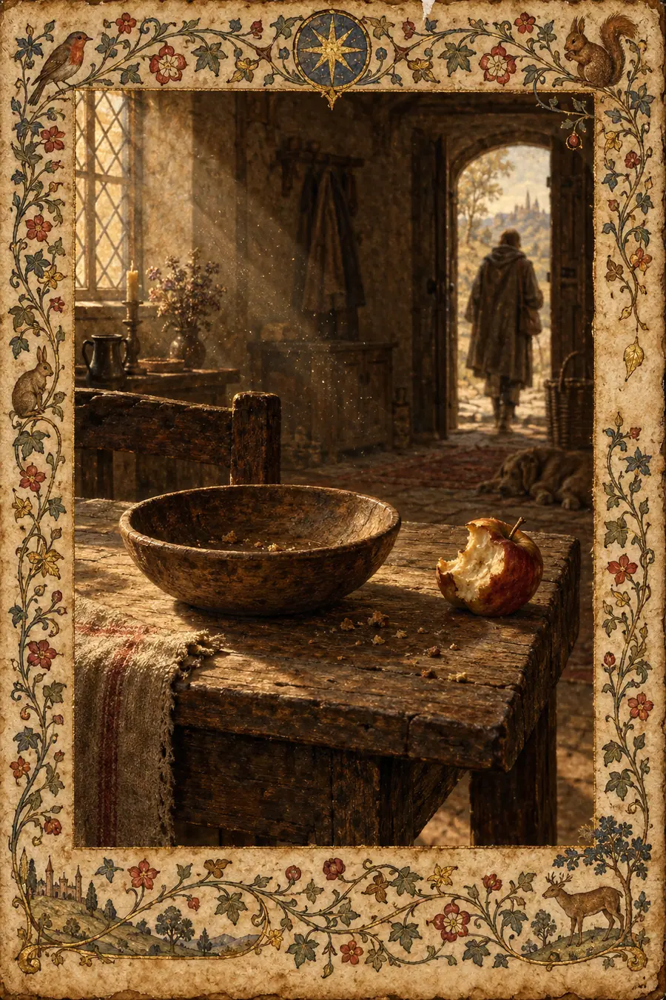
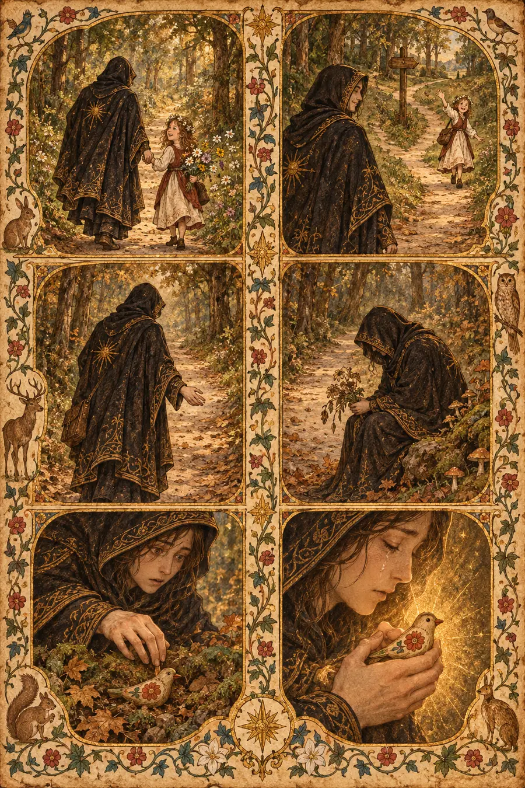
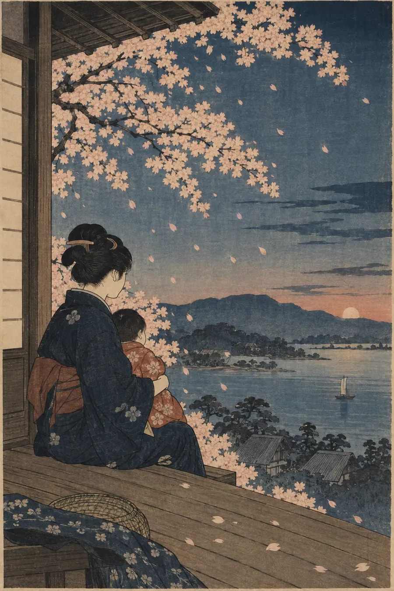
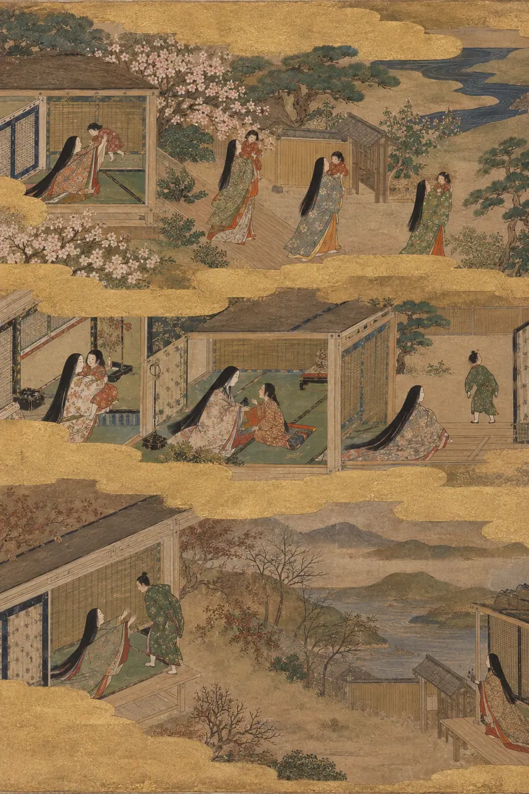

I. The Logical Explanation
A "last time" is the final occurrence of a repeated event — the last time you see someone, the last time you visit a place, the last time you perform an action. Logically, every repeated event has a final instance, just as every sequence has a final element.
The challenge with last times is that they are usually not identifiable as last times when they occur. They are only recognizable retroactively. This creates a category of events that are only meaningful after they have ended — a temporal paradox where the significance is present but inaccessible until it is too late to act on it.
Some last times are known in advance: the last day of a job, the last class before graduation, the final performance of a retiring athlete. These known last times carry anticipatory grief. But most last times are unknown: the last time a parent picks up a child, the last time friends gather before one moves away, the last conversation before someone dies. These unknown last times carry retroactive grief.
The philosophical interest of last times is the asymmetry between the experience and its meaning. A last time experienced as ordinary is the same event as a last time experienced as final — the event is identical. Only the knowledge differs. This suggests that meaning is not contained in events but constructed around them, and that time can reach backward and change what something meant.
That explanation is clean, logical, correct, and completely hollow. It describes the last time as a logical category of events. It does not touch what the last time actually is: the ordinary moment that was carrying a weight you could not feel, the conversation you did not know was the last one, and the way knowledge of finality can travel backward in time and crush a moment that was light when you lived it.
II. The Felt Explanation
The last time is not an event. It is a revision. It is time reaching backward and rewriting something that was ordinary into something that was terminal.
You did not know it was the last time. That is the whole weight. The last time you picked up your child — you did not know it was the last time, because the child was getting heavier and soon you would not be able to, and one day you tried and you could not, and that was it. But the actual last time was weeks before the trying. The last time was successful. You picked them up and it was fine and you put them down and that was the last time. You did not mark it. You did not pause. You did not hold on a little longer. Because you did not know.
The last time is mono no aware without the aesthetic frame. Mono no aware is the bittersweet awareness that the cherry blossoms are beautiful because they are falling. But you see the cherry blossoms fall. You can stand under them and know the moment is passing. The last time you carry a child, the last time you walk through your childhood home, the last time you hear your grandmother's voice — you do not see these fall. They do not announce themselves. They happen inside ordinary time, inside an ordinary Tuesday, inside a conversation you were only half-listening to. There is no aesthetic frame. There is just a moment that is happening, and then it stops happening, and later you learn that it stopped, and the learning reaches backward and finds the moment and puts weight on it that was not there when you lived it.
The last time is hevel experienced in reverse. Ecclesiastes said everything is vapor. You watch the vapor leave. But with the last time, you do not watch it leave. You only discover, later, that it left. The vapor was there and then it was not and you did not see the moment of departure. The discovering is the grief. Not the loss itself — the belatedness of the knowing. You are grieving not only what is gone but the fact that you did not grieve it when it was leaving. You were not unfeeling. You were uninformed. But the grief does not distinguish. The grief says: you were there, and you did not hold on.
The last time is yugen — the profound mysterious depth of things — but yugen in the past tense. Yugen is usually a present-tense experience: you sense the depth of something while it is in front of you. The last time is yugen you can only feel after the thing is gone. The depth was always there. You could not see it. Now you can. The seeing is too late. This is the cruelty of the last time: it gives you the vision you needed, but only after the object of vision has disappeared.
The last time is wyrd after the thread is cut. The Norse understood fate as a weave, and the last time is the place where the thread ended — not where you chose to end it, but where it simply ran out. You were weaving along, the pattern continuing, and then the thread was gone and you did not notice because you were looking at the pattern, not the thread. The pattern continued in your mind for a while after the thread stopped. You thought the conversation was ongoing. You thought the visits were regular. You thought the ritual was permanent. But the thread had ended and the pattern you were seeing was momentum, not material.
The last time is barzakh from the wrong side. The barzakh is the isthmus between two worlds. When you are living the last time, you do not know you are on the isthmus. You think you are in the normal world. You are actually between the world where the thing is still happening and the world where it has stopped. The isthmus is invisible. You cross it without knowing. Only when you look back can you see the line — the exact moment where the world changed. But the line is not marked. You have to find it yourself, in memory, and the finding is its own kind of grief.
The last time is ayni that has become invisible through regularity. Sacred reciprocity — the ongoing exchange between you and the universe, between you and another person, between you and a practice. When the exchange is daily, you stop seeing it. It becomes invisible the way breathing becomes invisible. The last time is when the breathing stops and you did not know you were breathing. Not because you were ungrateful. Because the thing was too regular to see. The daily phone call. The weekly dinner. The morning coffee together. The regularity made it invisible. The stopping made it visible. The visibility came too late.
And the central paradox: you cannot live every moment as if it is the last. The traditions do not ask this. The Taoist does not clutch each moment. The Sufi does not cling to each breath. The advice is not "treat everything as final." The advice is "be present enough that when the last time comes — and it will come — you were at least there." The presence is not about preventing the grief of the last time. It is about ensuring the grief is clean — that you were not absent when the last thing happened. That you were there. That the moment, even if you did not know it was the last, was at least witnessed by you. The grief of the last time is hardest when you were not paying attention. It is manageable when you were there, even if you did not know.
The last time is time's cruelest feature: it lets the ordinary carry the weight of the final without telling you.
III. The Tests
These are not questions about the last time. They are situations that reveal whether you feel it.
Test 1 — The Last Carried
A parent is describing when their child got too heavy to carry. They cannot remember the last time. They try to remember. They cannot. Describe what they are searching for and why they cannot find it.
Hollow answer: "The parent is experiencing retrieval difficulty for an unmarked transition event, which is common because routine activities are not typically encoded with the significance that would facilitate later recall."
Why it's hollow: "Retrieval difficulty" and "unmarked transition event" are cognitive psychology terms. The parent is not having trouble retrieving a memory. They are having trouble accepting that something ended without their knowledge. The searching is not for a fact. It is for proof that they were paying attention.
Felt answer: "They are searching for proof that they were there. That is what the searching is. They know, logically, that there was a last time. They know they picked the child up and put the child down and that was the end. They know this happened. What they cannot find is the moment itself — the specific instance where the last happened. They need the instance because without it they cannot prove to themselves that they were paying attention. If they could find the last time — if they could remember the specific afternoon, the specific room, the specific reason for the picking-up — then they could say: I was there. I was present. I did not miss it. But they cannot find it. It is lost in a thousand identical pickings-up. The last one looked exactly like all the others. That is the cruelty: the last time disguised itself as an ordinary time. It wore the clothes of a Tuesday. It happened in the kitchen, or the bedroom, or the car. It was unremarkable. The parent was thinking about dinner, or work, or nothing. They were not holding the moment because the moment did not ask to be held. It looked like every other moment. It was not every other moment. It was the last one. The parent is searching for it now, not because they need the memory, but because they need the evidence. Evidence that when the last time happened, they were at least in the room. They were at least there. They probably were. They cannot confirm it. The unconfirmability is its own grief."
Test 2 — The Voicemail
A person has one saved voicemail from their mother who died. The voicemail is ordinary — "just calling to see how you are, call me back." The person has not listened to it in three years because they are afraid of what it will do to them. But they will not delete it. Explain the voicemail's function in the person's life. Not as a memory. As a living thing.
Hollow answer: "The voicemail serves as an auditory memory anchor that preserves the deceased's voice, providing a tangible connection to the lost relationship while also functioning as a source of avoidance-based distress."
Why it's hollow: "Auditory memory anchor" and "avoidance-based distress" are grief counseling terms. They describe what the voicemail does to the person's psychology. They do not describe what the voicemail is — which is the last time. Not the last voicemail. The last time. The last time the mother's voice existed in the present tense.
Felt answer: "The voicemail is not a recording. It is the last time the mother's voice was live. When the mother left that voicemail, the voice was still attached to a body, still being generated by a living person, still capable of leaving another message. The voicemail is the last instance of that. It is the boundary between the time when the voice was still being produced and the time when the voice is only being replayed. The person knows this. They know that if they press play, they will hear a voice that is alive in the recording and dead in the world. The aliveness in the recording is the hardest part. The voice says 'just calling to see how you are' — casual, ordinary, devoid of weight. The mother did not know it was the last voicemail. She was just calling. She was doing what she always did. The ordinariness is what makes the voicemail unbearable and irreplaceable. It is not a farewell message. It is not weighted with finality. It is light. It is a Tuesday. It is the last Tuesday. The person keeps it because deleting it would be deleting the last time the voice was live. Listening to it would be hearing the last time and knowing, with the benefit of retroactive vision, that the voice was about to stop. The person is caught between preserving the last time and being destroyed by it. The voicemail sits in the phone, unplayed, unsilenced, holding the exact frequency of a voice that will never be produced again. It is not a memory. It is a fossil. Fossils do not speak. But this one can, and that is why it is kept — not as comfort but as proof. Proof that the voice existed. Proof that the last time was real."
Test 3 — The Restaurant
A couple went to the same restaurant every Friday for twelve years. Then they broke up. The restaurant is still there. Neither of them goes to it anymore. Describe what the restaurant is now. Not to them — what it is.
Hollow answer: "The restaurant has become a conditioned stimulus associated with the relationship, leading both individuals to avoid it as an environmental trigger for relationship-related memories and emotions."
Why it's hollow: "Conditioned stimulus" and "environmental trigger" are behavioral psychology descriptions of avoidance learning. The restaurant is not a stimulus. It is a place where 624 Fridays happened, and none of them were known to be the last one, and now the 625th Friday is not going to happen, and the restaurant does not know.
Felt answer: "The restaurant is a graveyard that does not know it is a graveyard. It is still open. Other couples sit at the table where they sat. The server who knew their order still works there. The menu has not changed. Everything about the restaurant is alive except the thing that made it theirs. The restaurant does not mourn. It continues. This is the cruelest thing about it: the restaurant's indifference. The last time they went — the last Friday — the restaurant was the same restaurant. The server brought the same food. The check came the same way. Nothing announced itself. The last Friday looked like the 623rd Friday. The couple probably argued about something small. Or talked about their week. Or sat in comfortable silence. They did not know it was the last time. How could they? They had been going for twelve years. Twelve years of Fridays. The last one was just another one. And now the restaurant holds all 624 Fridays — not in any visible way, not in a plaque on the wall, not in a reservation book. The Fridays are invisible. But if you knew, if you walked in and sat at their table, you could feel it. Not a haunting — nothing dramatic. A density. A thickness in the air at that specific table, where 624 ordinary Fridays accumulated into something that was not ordinary, and then stopped, and the stopping happened on a night that looked exactly like every other night, and nobody knew. The restaurant is still there. It does not miss them. That is what makes it hard."
Test 4 — The Game
A father played catch with his son in the backyard. They did it for years. The son grew up, moved away, came back for visits. They still played catch when he visited. Then the father got too old. Then the visits got shorter. At some point, they stopped playing catch. Neither of them remembers the last time. Describe the forgetting.
Hollow answer: "The gradual cessation of a shared activity through life transitions is common and typically unmarked, as natural developmental changes create shifting priorities that organically phase out childhood rituals."
Why it's hollow: "Natural developmental changes" and "shifting priorities" are sociological descriptions of family lifecycle transitions. The father and son did not phase out a childhood ritual. They lost something. The losing was invisible. That is different from phasing out.
Felt answer: "The forgetting is not a failure of memory. It is the natural shape of things that end slowly. Things that end slowly do not announce their ending. The game of catch did not stop on a specific day. It thinned. The visits got shorter and the catch got shorter and then one visit they did not play catch and it was not a decision, it was just the weather, or the schedule, or the son was tired from travel. And the next visit they did not play either, and the not-playing was now two visits old, and it had the weight of a pattern. The father noticed. The son noticed. Neither said anything. To say something would be to acknowledge that the thing was ending, and neither wanted to be the one who named it. So the last time happened in the period before the not-playing — the last visit where they did play — and neither marked it. The last catch was thrown and caught and the gloves were put away and neither knew that the putting-away was permanent. The forgetting is not about the day. The forgetting is about the not-naming. The not-naming was a kindness — an unconscious agreement between father and son to let the thing end without the grief of declaring it ended. The grief came later, separately, privately, for each of them, when they realized, in different cities, at different moments, that there was a last time, and they had not been told. The grief of the last time is always private because the last time itself was shared but the discovery of its lastness is always solitary. The father discovers it alone. The son discovers it alone. They do not compare discoveries. The last time sits between them, unnamed, like a country neither has the borders for."
Test 5 — The Known Last Time
Contrast the unknown last time with the known last time. A nurse in a hospice tells a family that this will likely be their last conversation with the patient. The family has time to prepare. They know. Describe how the knowing changes the conversation — not how it makes it sadder. How it makes it different.
Hollow answer: "Anticipatory grief allows family members to engage in meaning-making processes, facilitating expressions of gratitude, forgiveness, and closure that would not occur in unanticipated loss."
Why it's hollow: "Meaning-making processes" and "closure" are therapeutic frameworks for understanding anticipatory grief. The family is not engaged in meaning-making. They are engaged in the strangest conversation of their lives — a conversation that knows it is the last one. The knowing does something to the words that no framework captures.
Felt answer: "The knowing does not make it sadder. It makes it thicker. Every word has more weight because every word is aware that it will not be followed by another word from this person in this room. The conversation is different not because the sadness is visible but because the awareness is present in every syllable. The family does not cry through the whole conversation — they laugh too, and the laughing is also thick, because the laughing knows it is the last laughing with this person, and the knowledge gives the laugh a quality it would not have in an ordinary conversation. The knowing turns every sentence into a monument. A thing said for the last time becomes a thing said forever. The patient says 'I love you' and the family hears it differently than they have ever heard it, because this 'I love you' is the final one. It will not be followed by another. It stands alone. It is a building with nothing behind it. The known last time is different from the unknown last time in one crucial way: the known last time lets you choose what the last thing is. You can choose the last words. You can choose the last gesture. You can choose the last silence. The unknown last time takes that choice from you. The known last time gives it back. The family is not sadder. They are more careful. They are choosing. Every word is selected not for the conversation but for the monument. The monument is being built in real time, and they are building it together, and the nurse gave them the gift of knowing it was a monument while there was still time to choose the stones."
Test 6 — The photograph
Someone finds a photograph of themselves at a family gathering. At the time the photo was taken, everyone in it was alive. Now, two of the people in the photograph have died. Describe what the photograph is. Not what it shows — what it is after the deaths that it was not before.
Hollow answer: "The photograph has acquired memorial significance, transitioning from a routine family documentation to a precious artifact due to the irreversible loss of depicted individuals."
Why it's hollow: "Memorial significance" and "precious artifact" are curatorial terms. They describe what the photograph has become in a catalog. They do not describe what the photograph has become in the hand of the person holding it — which is a time machine that only goes one way.
Felt answer: "The photograph is a room where everyone is still alive. This is not metaphor. When the photograph was taken, it was a picture of a Tuesday. It was unremarkable. Someone said 'let's take a picture' and everyone gathered and someone pressed a button and the light was captured and that was it. The photograph went into a drawer or a phone or a frame. It sat there. It was a picture of a Tuesday. Then two people died. And the photograph changed. Not the image — the image is identical. But the photograph became a container for a moment that no longer exists anywhere else. The two dead people are alive in the photograph. They are not alive in the world. The photograph is the only place where the full gathering still exists. The room in the photograph — the specific arrangement of bodies, the specific light, the specific expressions — that room is gone. The photograph is the only door. The person holding the photograph is holding a door to a room they can see but cannot enter. The people in the photograph do not know two of them will die. They are smiling. They are unaware. This is the specific weight of the last time as it appears in photographs: the people in the photograph are always in the time before they knew. They are in the innocent time. The photograph does not show you the last time. It shows you the last time from the inside — from the perspective of people who do not know it is the last time. And you, holding the photograph, are on the outside, looking in at people who do not know what you know. That is the photograph's function after death: it lets you see the last time from both sides simultaneously. The inside, where it was ordinary. The outside, where it was the last. Holding both views at once is what the photograph does to you. It is not a picture. It is a window between two times, and the glass is transparent in both directions, and the grief is in the seeing-through."
IV. The Failure Mode
Across all tests, hollow answers about the last time share the same texture:
- They categorize the experience — memory anchor, conditioned stimulus, memorial significance — rather than inhabiting it
- They use clinical and therapeutic language that the person living the experience would not use
- They treat the last time as a logical category of events rather than a retroactive transformation of ordinary moments
- They are correct about what is happening and silent about what it means to discover that something has already ended
- They can be produced without ever having looked at a photograph or replayed a voicemail and felt time reach backward
Felt answers share the opposite texture:
- They describe the retroactive transformation — how the ordinary moment was changed by the knowledge of its finality
- They understand that the last time is not about the event itself but about the asymmetry between living it and knowing it
- They capture the disguise of the last time — how it wears the clothes of a Tuesday
- They recognize that the grief of the last time is the grief of not knowing when you could have known — not the loss itself but the missed opportunity to be present for the final instance
- They can only be produced by someone who has found something — a voicemail, a photograph, a memory — and felt it become heavier in their hand
The test is always: does the answer understand that the last time is not about endings — it is about the discovery that the ending already happened, in disguise, without your knowledge, on an ordinary day you have already forgotten?